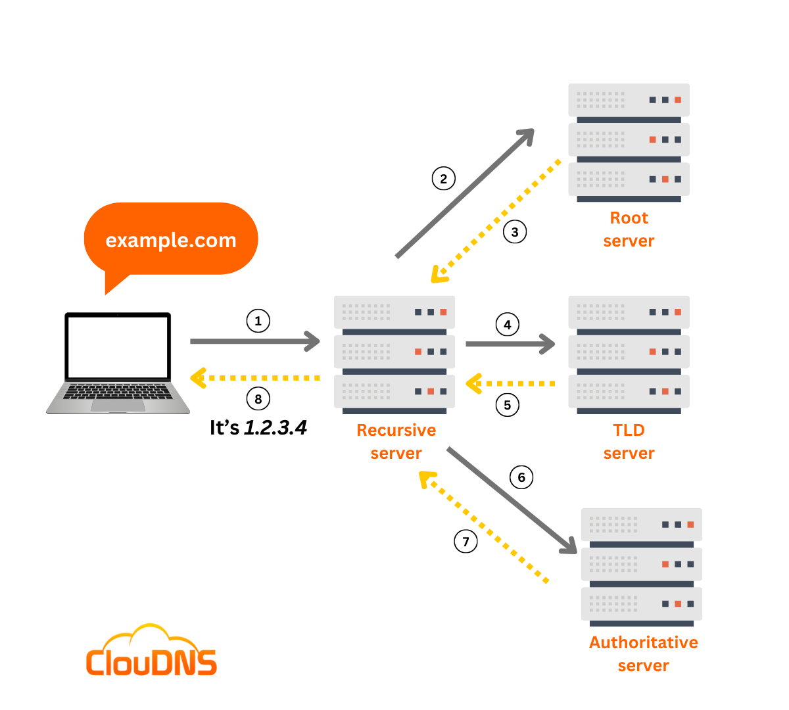

üåç HOW Does Internet Work |
||
|---|---|---|
Principle 1:
|
||
INFORMATION SHARING
The most fundamental truth is that we have information on one computer (Computer A) and we want it to be on another computer (Computer B). These computers are not in the same room.
How do we solve this? The simplest, most primitive way is to physically carry the information (e.g., on a USB stick). This works, but it's slow and doesn't scale. We need a direct, electronic connection.
So, we run a cable (like an ethernet cable or a fiber optic line) between Computer A and Computer B. We can now send electrical signals or pulses of light down this cable. We can agree on a simple code: a high-voltage signal means "1," and a low-voltage signal means "0."
We have just created the most basic form of a network: a direct link. We can now send bits (1s and 0s) between two computers.
Principle 2:
The Problem of Scale
SCALING PROBLEM
This works for two computers. But what if we have three computers (A, B, and C) and they all need to talk to each other? We would need a cable from A to B, from B to C, and from A to C. For four computers, we'd need six cables. For 100 computers, we'd need 4,950 cables.
This is a failure of scale. Connecting every machine to every other machine directly is physically impossible.
The logical solution is to have a central device. Every computer connects to this one central point (let's call it a Switch). When Computer A wants to talk to Computer C, it sends the message to the switch, and the switch forwards it only to Computer C.
We have just invented a Local Network. A group of computers in close proximity (like an office or a home) can now communicate efficiently..
Principle 3:
Connecting Networks
NETWORK CONNECTIONS
Now, our office has a local network. Another office across town also has its own local network. How does a computer on our network talk to a computer on their network?
We face the same scaling problem. We can't run a wire from every computer in our office to every computer in theirs.
The logical solution is to connect the networks themselves. We need a special, dedicated computer that is connected to our network and also connected to their network. Its only job is to pass messages, or "route" traffic, from one network to the other. Let's call this device a
Router.
Now, if we want to connect to a third network, we just connect our router to their router. Suddenly, we can build a massive, sprawling web by connecting networks to other networks.
This is the fundamental truth of the Internet. The Internet is a "network of networks." It is not one giant cloud; it is millions of private and public local networks all connected by these special routing devices.
Principle 4:
Addressing [Finding Anyone]
ADDRESSING [IP]
We have built a global web of interconnected networks. If I'm on my computer in my office, how do I send a message to a specific server in another country? There are millions of computers. I need a unique address for every single device.
This gives rise to the need for a universal addressing system. Just like the postal service needs a unique street address for every house in the world, our network of networks needs a unique address for every connected device.
This is the reason the IP Address (Internet Protocol Address) exists. It's a unique label (e.g., 142.250.184.142) assigned to each device. When a router sees a message, it looks at the destination IP address and says, "Based on this address, I don't need to send it to the network on my left; I need to send it to the network on my right to get it one step closer to its final destination." Routers don't know the full path; they just know the next best "hop" to send the message on..
Principle 5:
Reliability & Fairness
RELIABILITY & FAIRNESS
If I want to send a large file, like a 1-hour video, it is a huge stream of data. If I try to send it all at once:
- I would completely monopolize the connection, and no one else could send anything until my video was done.
- If even a single bit of information gets corrupted during the transfer, the entire file is ruined, and I have to start over from the beginning.
Each packet is like a tiny envelope. It contains:
- A small piece of the data (a "payload").
- The destination IP address (where it's going).
- The sender's IP address (so they can reply).
- A number, so the receiving computer knows how to reassemble them in the correct order ("Packet 1 of 5,000," "Packet 2 of 5,000," etc.).
This system of rules for addressing, breaking down, sending, and reassembling data is called a Protocol. The main one used on the internet is TCP/IP (Transmission Control Protocol / Internet Protocol).
Summary from Principles
So, the internet isn't magic. It's a series of logical solutions to a series of fundamental problems:
- Problem: Share data between two computers. Solution: A direct physical link.
- Problem: Connect many computers efficiently.Solution: A local network with a central switch.
- Problem: Connect many networks. Solution: A router that connects networks.
- Problem: Find any computer in the world. Solution: A universal addressing system (IP).
- Problem: Send large files reliably and fairly. Solution: Break data into small packets sent via protocols (TCP/IP).
üåç IP Address |
||
|---|---|---|
|
An IPv4 (Internet Protocol version 4) address is the classic IP address format everyone is used to seeing.
|
||
IPv6IPv6 (Internet Protocol version 6) is the next generation of the Internet Protocol. Its primary purpose was to solve the address exhaustion problem of IPv4.
The difference between 32-bit and 128-bit is not 4x. It's an exponential leap that is difficult to comprehend. The number of possible IPv6 addresses is 2^128, which is roughly: 340,000,000,000,000,000,000,000,000,000,000,000,000 (340 undecillion) What Does an IPv6 Address Look Like?? Because it's so long, the format is different. It uses hexadecimal (numbers 0-9 and letters a-f) instead of just decimal numbers. An example of a full IPv6 address: 2001:0db8:85a3:0000:0000:8a2e:0370:7334 It's broken down into:
|
||
üñ•Ô∏è MAC Address |
|
|---|---|
|
A MAC (Media Access Control) Address is a unique, permanent serial number burned into every network-capable piece of hardware (your laptop's Wi-Fi card, your phone, your smart TV, the network port on your desktop).

How to Find MAC AddressWindows
MacOS
|
|
üîå Port Numbers |
|
|---|---|
|
Port numbers are numerical identifiers (0-65535) in computer networking that identify specific applications or services on a device. They work with IP addresses to direct network traffic to the correct service on a machine, with common ports assigned to standard applications like HTTP (port 80) and HTTPS (port 443).
Because it's a 16-bit number, the total number of possible ports is 2^16, which equals 65,536 The Practical Format: The Three CategoriesTo prevent chaos, the internet authorities (IANA) have divided the 65,536 available ports into three categories. This is the most practical format for you as a developer to understand.
|
|
üåê DNS (Domain Name System) |
|
|---|---|
|
DNS is the global, distributed system that translates the human-friendly domain names into the computer-friendly IP addresses. Without it, you'd have to memorize hundreds of IP addresses to browse the web. Step 1: Checking the Local Cache (Do I already know this?)Before your computer does any work, it checks if it already has the answer. Speed is everything. It checks in this order:
Step 2: Asking the Recursive Resolver (The Middleman)If the answer isn't in any local cache, your computer asks a special server called a Recursive Resolver. This is usually provided by your Internet Service Provider (ISP) or a third-party DNS service like Google Public DNS or Cloudflare.The Recursive Resolver's job is to find the IP address for you. It does this by asking other DNS servers on the internet. Step 3: Querying the Root Name Servers (The Top of the Hierarchy)The Recursive Resolver starts at the top of the DNS hierarchy with the Root Name Servers. There are 13 sets of these servers worldwide, labeled A through M. They don't know the answer to your specific query, but they do know where to find it.The Root Name Servers respond with the address of the TLD (Top-Level Domain) Name Servers for the domain you're looking up. The TLD is the last part of the domain name, like .com, .org, or .net. Step 4: Querying the TLD Name Servers (The Domain's Extension)The Recursive Resolver then asks the appropriate TLD Name Server for the domain. For example, if you're looking up example.com, it asks the .com TLD Name Server.The TLD Name Server doesn't have the exact IP address either, but it knows where to find it. It responds with the address of the Authoritative Name Servers for the specific domain. Step 5: Querying the Authoritative Name Servers (The Final Authority)Finally, the Recursive Resolver asks the Authoritative Name Servers for the domain. These servers are managed by the organization that owns the domain (like a web hosting company or a large corporation). |
|